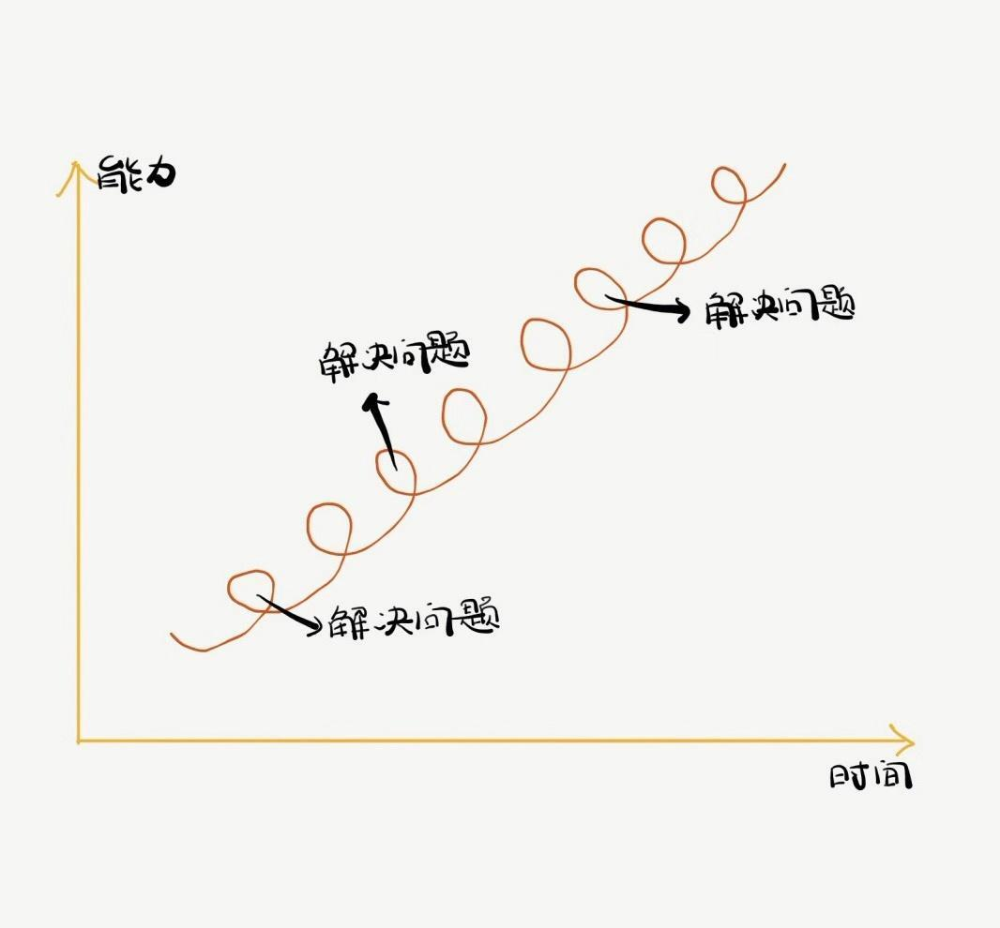
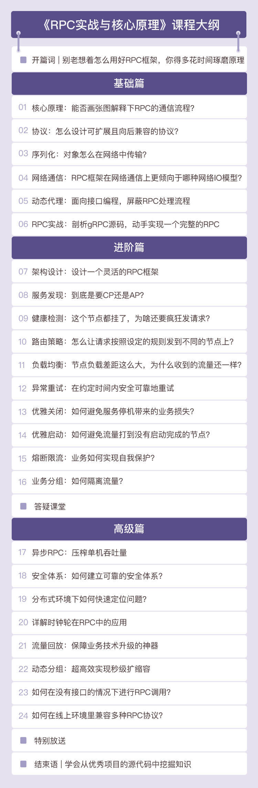

- 00 开篇词 别老想着怎么用好RPC框架，你得多花时间琢磨原理.md.html
- 01 核心原理：能否画张图解释下RPC的通信流程？.md.html
- 02 协议：怎么设计可扩展且向后兼容的协议？.md.html
- 03 序列化：对象怎么在网络中传输？.md.html
- 04 网络通信：RPC框架在网络通信上更倾向于哪种网络IO模型？.md.html
- 05 动态代理：面向接口编程，屏蔽RPC处理流程.md.html
- 06 RPC实战：剖析gRPC源码，动手实现一个完整的RPC.md.html
- 07 架构设计：设计一个灵活的RPC框架.md.html
- 08 服务发现：到底是要CP还是AP？.md.html
- 09 健康检测：这个节点都挂了，为啥还要疯狂发请求？.md.html
- 10 路由策略：怎么让请求按照设定的规则发到不同的节点上？.md.html
- 11 负载均衡：节点负载差距这么大，为什么收到的流量还一样？.md.html
- 12 异常重试：在约定时间内安全可靠地重试.md.html
- 13 优雅关闭：如何避免服务停机带来的业务损失？.md.html
- 14 优雅启动：如何避免流量打到没有启动完成的节点？.md.html
- 15 熔断限流：业务如何实现自我保护_.md.html
- 16 业务分组：如何隔离流量？.md.html
- 17 异步RPC：压榨单机吞吐量.md.html
- 18 安全体系：如何建立可靠的安全体系？.md.html
- 19 分布式环境下如何快速定位问题？.md.html
- 20 详解时钟轮在RPC中的应用.md.html
- 21 流量回放：保障业务技术升级的神器.md.html
- 22 动态分组：超高效实现秒级扩缩容.md.html
- 23 如何在没有接口的情况下进行RPC调用？.md.html
- 24 如何在线上环境里兼容多种RPC协议？.md.html
- 加餐 RPC框架代码实例详解.md.html
- 加餐 谈谈我所经历过的RPC.md.html
- 答疑课堂 基础篇与进阶篇思考题答案合集.md.html
- 结束语 学会从优秀项目的源代码中挖掘知识.md.html
- 捐赠
00 开篇词 别老想着怎么用好RPC框架，你得多花时间琢磨原理
你好，我是何小锋。欢迎你和我一起学习RPC。
在专栏开始之前，我先简单介绍下自己。我是1998年从北航毕业的，毕业以后我就一直在一线编程写代码。2011年，我正式加入京东，刚好赶上了京东的快速发展期，一路做到了现在的技术架构部首席架构师。盘点下在京东的这9年时间，我参加过17次大促备战，和我的技术团队一起见证了京东的技术演进过程。我也曾带领团队攻克过很多技术领域难题，包括自主研发微服务框架、高性能消息中间件、智能监控以及容器平台等等。
近几年，我主攻分布式系统架构与设计，这也是我的专长所在。而在搭建分布式系统的过程中，我发现 RPC 总能充当较为关键的角色，它对整个分布式系统性能的提升起到了非常重要的作用。
我期待通过这个专栏，能把我这些年积攒的一些有关RPC的实战经验分享给你。
为什么要学习RPC？
做任何事情都应该 Start with Why，那我们就先来说说为什么要学习RPC。要回答这个问题，我们就得先考虑下RPC的实际应用场景。
说到RPC，可能你的第一反应就是“微服务”。RPC最大的特点就是可以让我们像调用本地一样发起远程调用，这一特点常常会让人感觉RPC就是为“微服务”或SOA而生的。现在的大多数应用系统发展到一定规模之后，都会向“微服务化”演进，演进后的大型应用系统也的确是由一个个“微服务”组成的。
我们可以说 RPC 是“微服务”的基础，这一点是毋庸置疑的。现在我们就可以反过来想这样一个问题——RPC是不是只应用在“微服务”中呢？
当然不是，只要涉及到网络通信，我们就可能用到RPC。一起看这样两个例子。
例1：大型分布式应用系统可能会依赖消息队列、分布式缓存、分布式数据库以及统一配置中心等，应用程序与依赖的这些中间件之间都可以通过RPC进行通信。比如 etcd，它作为一个统一的配置服务，客户端就是通过gRPC框架与服务端进行通信的。
例2：我们经常会谈到的容器编排引擎 Kubernetes，它本身就是分布式的，Kubernetes的 kube-apiserver 与整个分布式集群中的每个组件间的通讯，都是通过gRPC框架进行的。
所以说，RPC的应用场景还是非常广泛的。既然应用如此广泛，那它的核心价值又在哪里呢？
在我看来，RPC是解决分布式系统通信问题的一大利器。
分布式系统中的网络通信一般都会采用四层的TCP协议或七层的HTTP协议，在我的了解中，前者占大多数，这主要得益于TCP协议的稳定性和高效性。网络通信说起来简单，但实际上是一个非常复杂的过程，这个过程主要包括：对端节点的查找、网络连接的建立、传输数据的编码解码以及网络连接的管理等等，每一项都很复杂。
你可以想象一下，在搭建一个复杂的分布式系统过程中，如果开发人员在编码时要对每个涉及到网络通信的逻辑都进行一系列的复杂编码，这将是件多么恐怖的事儿。所以说，网络通信是搭建分布式系统的一个大难题，是一点不为过的，我们必须给予足够的重视。
而RPC对网络通信的整个过程做了完整包装，在搭建分布式系统时，它会使网络通信逻辑的开发变得更加简单，同时也会让网络通信变得更加安全可靠。
现在你是不是感觉到学好RPC是很有必要的？
如何学习RPC？
那我们应该怎么去学习RPC呢？
其实，深刻了解了为什么之后，怎么学这个问题并不难找到答案。就我自己的经验来看，我觉得可以用“逐步深入”这四个字来概括我的学习方式。
说起来也特别简单。当我们认识到，使用RPC就可以像调用本地一样发起远程调用，用它可以解决通信问题，这时候我们肯定要去学序列化、编解码以及网络传输这些内容。
把这些内容掌握后，你就会发现，原来这些只是RPC的基础，RPC还有更吸引人的点，它真正强大的地方是它的治理功能，比如连接管理、健康检测、负载均衡、优雅启停机、异常重试、业务分组以及熔断限流等等。突然间，你会感觉自己走进了一个新世界，这些内容会成为你今后学习RPC的重点和难点。
这个逐步深入的过程，一定离不开真实的实践场景。学习知识，解决问题，遇到新问题，继续学习，不断解决问题，最后你会发现自己的学习曲线大概是这样的。

总结一下，学习RPC时，我们先要了解其基本原理以及关键的网络通信部分，不要一味依赖现成的框架；之后我们再学习RPC的重点和难点，了解RPC框架中的治理功能以及集群管理功能等；这个时候你已经很厉害了，但这还不是终点，我们要对RPC活学活用，学会提升RPC的性能以及它在分布式环境下如何定位问题等等。
整个专栏能让你学到什么？
上面提到的这些内容，就是我想通过这个专栏和你分享的。下面我来讲下本专栏的设计思路。
我把整个专栏的内容分为了三大部分，分别是基础篇、进阶篇和高级篇。
基础篇：重点讲解RPC的基础知识，包括RPC的基本原理以及它的基本功能模块，夯实基础之后，我们会以一场实战，通过剖析一款RPC框架来将知识点串联起来。
进阶篇：重点讲解RPC框架的架构设计，以及RPC框架集群、治理相关的知识。这部分我会列举很多我在运营RPC框架中遇到的实际问题，以及这些问题的解决方案。
高级篇：通过对上述两部分的学习，你已经对RPC有了较高层次的理解了。在这部分，我主要会从性能优化、线上问题排查以及一些比较有特色的功能设计上讲解RPC的应用。

整个专栏跟下来，虽然主要讲解的都是RPC相关的知识，但你会接触到很多的案例和解决方案，它们首先会使你对RPC的理解到达一个较高的层次；其次就是这些知识和解决方案会有相通性，只要你能举一反三，对你今后的工作就会有很大的帮助。
最后，我也很想听听你的想法。我们可以在留言区认识一下，期待你和我讲讲你的工作经历，你对RPC的认识，以及学习它的痛点、难点，我也好有针对性地为你讲解。现在，就让我们共同开启这段学习之旅吧！
© 2019 - 2023 Liangliang Lee. Powered by gin and hexo-theme-book.